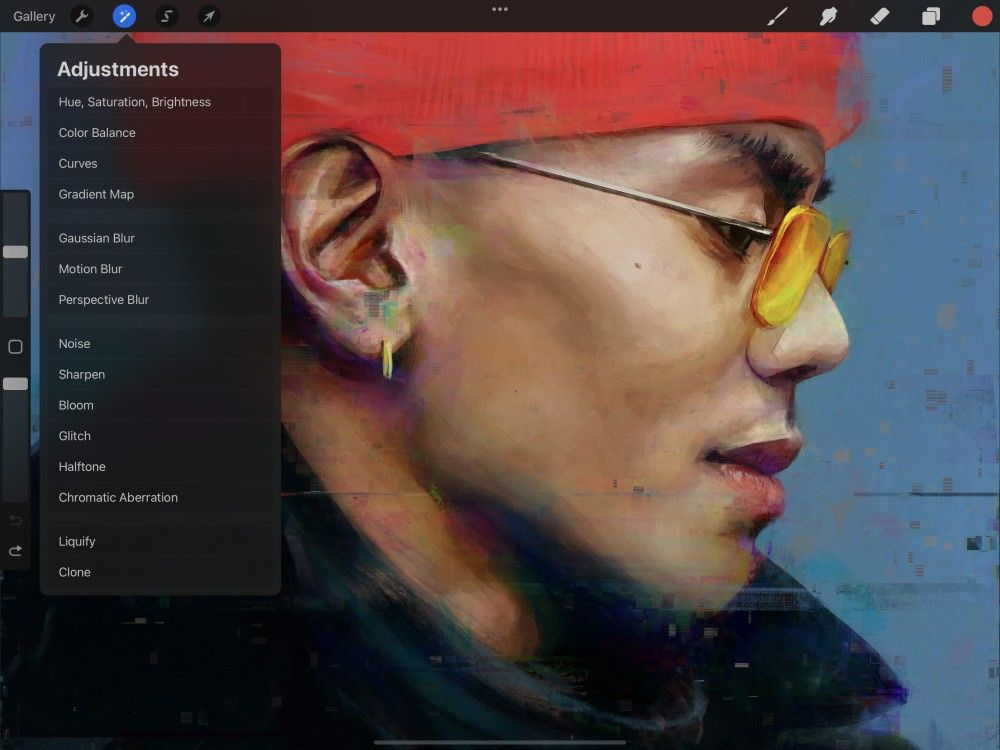

📖 Nội dung bên dưới là bản gốc tiếng Anh (chưa dịch). Ảnh đã cache offline.
Glitch
Add various Glitch style effects to your images.
Add four different types of Glitch effects — Artifact, Wave, Signal and Diverge to your artwork and control how they interact.
The Glitch filters are designed to replicate glitches and distortion to your artwork. These include various analogue, digital and video inspired glitches.


Tap Adjustments → Glitch → Tap Layer or Pencil to enter the Glitch interface.
The Glitch filter in Procreate come with four different effects:
Artifact adds a glitch effect comprising of scattered horizontal lines and offset blocks.
Wave adds a glitch effect comprising of distorted waves.
Signal adds a glitch effect comprising of connected horizontal lines and scattered blocks combined with slight image offset.
Diverge adds a glitch effect comprising of offset horizontal lines combined with chromatic aberration.
Artifact
Apply a digital based Artifact glitch effect to your artwork.
Artifact visually replicates artifacts that occur when digital based video and images corrupt and glitch out. Used subtly Artifact applies a light horizontal noise style glitch effect. At extreme levels Artifact adds a block based snow storm effect.

Slide right and left to change the amount of Artifact glitch effect.
At the top of the canvas you’ll see a bar labelled Glitch. This bar displays the percentage of the Artifact effect applied to an image.
Initially, this is set at 0% Glitch. Drag your finger to the right to increase the amount of effect and to the left to reduce it.
Interface
Artifact lets you fine tune the amount of glitch you add with Amount, Block Size and Zoom controls.
With all the controls set to zero and the Glitch amount set to 100% Artifact will produce small, scattered horizontal lines. The Amount and Block Size controls will add random offset blocks to the effect.
The Amount slider controls the amount of offset blocks added to the Artifact effect ranging from None to Max.
The Block Size slider controls the size of the blocks applied to the effect.
The Zoom slider controls the size of the blocks and horizontal lines applied to the effect.
To gain a visual understanding of how Artifact works, slide the amount of Glitch to 100% and then move the Amount, Block Size and Zoom sliders back and forth.
Wave
Apply an analogue style Wave glitch effect to your artwork.
Wave visually replicates the waves that occur when an analogue based video signal isn’t tuned properly. Used subtly Wave applies a light horizontal offset image based glitch effect. At extreme levels Wave adds raster style horizontal scan lines across an entire image.
Slide right and left to change the amount of Wave glitch effect.
At the top of the canvas you’ll see a bar labelled Glitch. This displays the percentage of the Wave effect applied to an image.
Initially, this is set at 0% Glitch. Drag your finger to the right to increase the amount of effect and to the left to reduce it.
Interface
Wave lets you fine tune the amount of glitch you add with Amplitude, Frequency and Zoom controls.
With all the controls set to zero and the Glitch amount set to 100% Wave won’t produce any effect. If either Amplitude or Frequency is set to None, Wave also won’t produce any effect. To activate the Wave effect you must have some amount of Glitch %, Amplitude and Frequency applied.
The Amplitude slider controls the horizontal amount of offset applied to the wave effect
The Frequency slider controls the vertical amount of offset applied to the wave effect.
The Zoom slider controls the size of the horizontal stripes applied to the effect.
Signal
Apply an analogue style Signal glitch effect to your artwork.
Signal visually replicates the raster lines that occur when an analogue based video signal experiences interference. Used subtly Signal applies a light noise and image offset glitch effect. At extreme levels Signal adds raster style horizontal scan lines combined with monochromatic and colored blocks.
Slide right and left to change the amount of Signal glitch effect.
At the top of the canvas you’ll see a bar labelled Glitch. This bar displays the percentage of the Signal effect applied to an image.
Initially, this is set at 0% Glitch. Drag your finger to the right to increase the amount of effect and to the left to reduce it.
Interface
Signal lets you fine tune the amount of added glitch with Amount, Block Size and Zoom controls.
With all the controls set to zero and the Glitch amount set to 100% Signal won’t produce any effect.
The Amount slider controls the horizontal lines applied to the Signal effect ranging from None to Max.
The Block size slider controls the size of the blocks applied to the effect.
The Zoom slider controls the size of the blocks and horizontal lines applied to the effect.
To gain a visual understanding of how Signal works, slide the amount of Glitch up to 100% and then move the Amount, Block Size and Zoom sliders back and forth.
Diverge
Apply a digital style artifact and chromatic aberration glitch effect to your artwork.
Diverge visually replicates a digital based video glitch. Used subtly Diverge applies a light chromatic aberration effect with small scan lines. At extreme levels, Diverge applies a dramatic chromatic aberration effect with large blocks and scan lines.
Slide right and left to change the amount of Diverge glitch effect.
At the top of the canvas you’ll see a bar labelled Glitch. This bar displays the percentage of the Diverge effect applied to an image.
Initially, this is set at 0% Glitch. Drag your finger to the right to increase the amount of effect and to the left to reduce it.
Interface
Interface lets you fine tune the amount of added glitch with Red Shift, Green Shift, Blue Shift and Zoom controls.
With all the controls set to zero and the Glitch amount set to 100% Diverge won’t produce any effect.
The Red Shift slider controls the amount the red plane shifts diagonally in an RGB image. A positive amount will shift the red plane down and to the right. A negative amount will shift the red plane up and to the left.
The Green Shift slider controls the amount the green plane shifts diagonally in an RGB image. A positive amount will shift the green plane up and to the right. A negative amount will shift the green plane down and to the left.
Green Shift also controls how much the blocks and horizontal lines offset within the image.
The Blue Shift slider controls the amount the blue plane shifts vertically in an RGB image. A positive amount will shift the blue plane down, a negative amount will shift the blue plane up.
The Zoom slider controls the size of the blocks and horizontal lines applied to the effect.
To gain a visual understanding of how Diverge works, slide the amount of Glitch up to 100%. Then move the Red Shift, Green Shift, Blue Shift and Zoom sliders back and forth.
Commit Changes
Commit all changes with one touch.
To commit your changes and leave Adjustments, Tap the Adjustments icon again.
To commit to changes and stay in Glitch, Tap the canvas to invoke Adjustment Actions and Tap Apply.
Still have questions?
If you didn't find what you're looking for, explore our video resources on YouTube or contact us directly. We’re always happy to help.